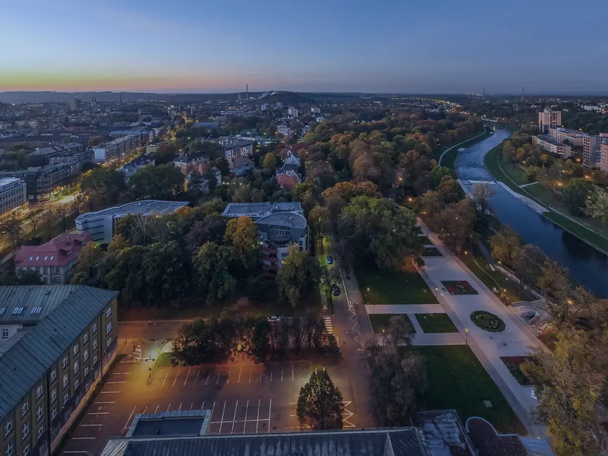

Soudní znalec · oceňování nemovitostí · Ostrava
Znalecké posudky a oceňování nemovitostí
Ing. Jana Machová, soudní znalec. Jmenována Krajským soudem v Ostravě v roce 2000 pro obor ekonomika, odvětví ceny a odhady nemovitostí.
Představení
Vyhotovuji znalecké posudky nebo odborná vyjádření o cenách nemovitostí pro soudy, státní orgány, právnické i fyzické osoby. Sídlím v Ostravě, oceňuji na území celé České republiky, prioritně v Moravskoslezském kraji.
- jmenována soudním znalcem
- 2000
- let znalecké praxe
- 26
- zápis u Krajského soudu v Ostravě
- Spr 1296/2000
- členka Komory soudních znalců ČR
- od 2001
Služby
Kdy potřebujete znalecký posudek nebo odborné vyjádření
Znalecký posudek nebo odborné vyjádření o ceně nemovité věci je podkladem pro notáře, soud či finanční úřad. Při zadání vám poradím, jaký typ ocenění vaše situace vyžaduje.
01 Dědické řízení
Ocenění nemovitostí v pozůstalosti pro notáře jako soudního komisaře. Od hodnoty majetku se odvíjí odměna notáře i vypořádání mezi dědici.
02 Převody nemovitostí, zřizování věcných břemen (služebností)
Prodej, darování, směna domu, bytu či pozemku nebo zřízení služebnosti (vedení inženýrských sítí, cesty, užívání apod.). Posudek slouží jako podklad pro stanovení kupní ceny, vypořádání mezi účastníky, pro finanční úřad apod.
03 Vypořádání spoluvlastnictví a SJM
Stanovení hodnoty pro vypořádání podílového spoluvlastnictví nebo společného jmění manželů, dohodou i před soudem.
04 Daňové účely a vyvlastnění
Ocenění podle oceňovacího předpisu (zjištěná cena) pro daňové účely a posudky pro účely vyvlastnění.
Pro koho pracuji
- soudy a státní orgány
- notáři jako soudní komisaři
- právnické osoby
- fyzické osoby a občané
Oceňuji podle oceňovacích předpisů i tržním způsobem. Záleží na tom, k jakému účelu potřebujete posudek použít.
Postup
Jak vzniká znalecký posudek
Od prvního telefonátu po předání posudku se znaleckou doložkou. Většinu podkladů stačí poslat e-mailem.
-
01
Zadání
Zavoláte nebo napíšete, popíšete nemovitost a účel ocenění. Domluvíme rozsah, termín a cenu posudku.
-
02
Podklady
Shromáždíte dostupné listiny k nemovitosti. Výpis a mapu z katastru si mohu opatřit sama.
-
03
Místní šetření
Prohlídka nemovitosti, zaměření, fotodokumentace a ověření skutečného stavu.
-
04
Posudek
Vyhotovení posudku se znaleckou doložkou, předání v tištěné nebo elektronické podobě, s možností použití elektronické znalecké pečeti.
Obvyklé podklady
- výpis z katastru nemovitostí
- snímek katastrální mapy
- nabývací titul (kupní či darovací smlouva, dědictví)
- projektová dokumentace stavby
- kolaudační rozhodnutí nebo souhlas
- geometrický plán, je-li zpracován
- nájemní smlouvy u pronajatých prostor
- prohlášení vlastníka u bytových jednotek
- doklady o věcných břemenech a zástavách
- usnesení soudu nebo pověření, jde-li o řízení

Profil
Vzdělání a znalecká praxe
Jsem soudním znalcem pro obor ekonomika, odvětví ceny a odhady nemovitostí. Znaleckou činnost vykonávám nepřetržitě od roku 2000. Oceňování nemovitostí se věnuji na území celé České republiky, prioritně v Moravskoslezském kraji.
Vystudovala jsem Fakultu stavební Vysokého učení technického v Brně a následně postgraduální studium na Ústavu soudního inženýrství VUT v Brně, zaměřené na oceňování nemovitostí.
Jsem členkou Komory soudních znalců České republiky, sekce stavebnictví – severní Morava. Posudky zpracovávám v souladu se zákonem č. 254/2019 Sb., o znalcích, znaleckých kancelářích a znaleckých ústavech, a s platnými oceňovacími předpisy.
-
Fakulta stavební VUT v Brně
Absolvování studia, titul Ing.
-
Ústav soudního inženýrství VUT v Brně
Postgraduální studium v oboru oceňování nemovitostí.
-
Jmenování soudním znalcem
Krajský soud v Ostravě, obor ekonomika, odvětví ceny a odhady nemovitostí, Spr 1296/2000.
-
Komora soudních znalců ČR
Členství v sekci stavebnictví, severní Morava.
-
Zápis podle nového znaleckého zákona
Pokračování znalecké činnosti v seznamu znalců vedeném Ministerstvem spravedlnosti.
Kontakt
Domluvme se na ocenění
Nejrychlejší je telefon. Podklady a dotazy posílejte e-mailem, na schůzce projdeme vše potřebné.
Platba
QR platba za posudek
Naskenujte kód v bankovní aplikaci. Číslo účtu se vyplní samo, částku a variabilní symbol doplníte podle vystavené faktury.
- Číslo účtu
- 27-2489420287/0100
- IBAN
- CZ67 0100 0000 2724 8942 0287
- Fakturační údaje
- Ing. Jana Machová
Alšova 522/13, 708 00 Ostrava-Poruba - IČO
- 69615632
- DIČ
- CZ6762010640